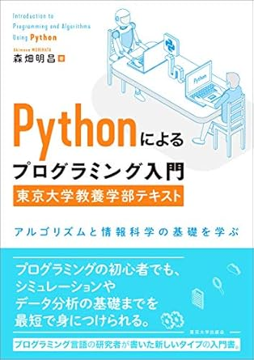
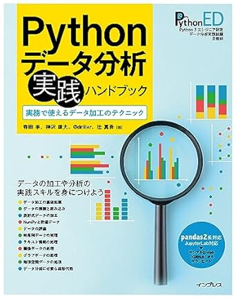
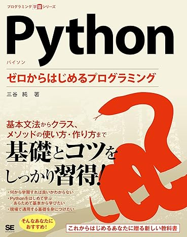
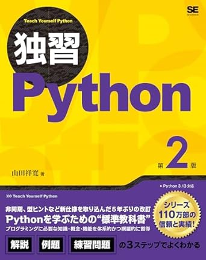
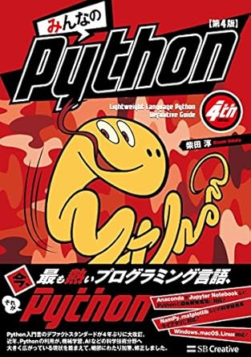
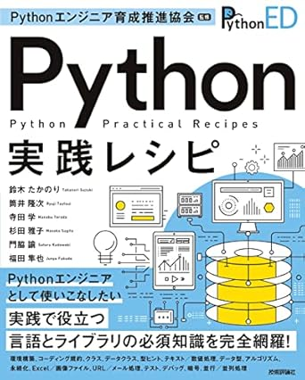
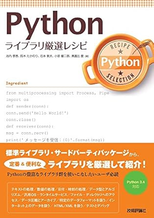
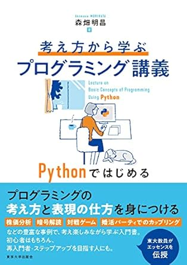

ライセンス・リファレンス¶
python¶
Python Boot Camp¶
東京大学 数理・情報教育研究センター¶
other¶
書籍¶
URL |
タイトル |
|---|---|
 |
|
 |
|
 |
|
 |
|
 |
|
 |
|
 |
|
 |
Google Colaboratory¶
Google Colaboratory (https://colab.google/)
ノートブックを開く (https://colab.research.google.com/)
新規ノートブックを作成 (https://colab.research.google.com/?authuser=0#create=true)
その他のツール¶
Visual Studio Code (VS Code)
Visual Studio Code (VS Code) は、Microsoftが開発した無料で利用できるコードエディターです。
拡張機能が豊富で、カスタマイズ性が高く、開発現場で広く利用されています。
公式サイト: https://azure.microsoft.com/ja-jp/products/visual-studio-code
Jupyter Notebook
Webブラウザ上でPythonなどのコードを実行できるインタラクティブな環境を提供するオープンソースのツールです。
データ分析や機械学習の分野で広く利用され、コード、実行結果、メモなどをまとめて記述・管理できるのが特徴です。
Google Colabは、Google Driveと連携した、Jupyter Notebookをベースにした開発環境です。名前の通りGoogleが提供しているクラウドサービスです．
Jupyter Notebookはパソコン等に設定して実行する対話型実行環境です。
JupyterLabは、Jupyter Notebookの後継となる統合開発環境です。従来のNotebookで行えたことはすべてJupyterLabでも可能であり、さらに多くの機能が拡張されています
公式サイト: https://jupyter.org/
Anaconda
初心者でも簡単にPythonの開発環境をインストーラーを実行するだけで構築可能です。
データサイエンスや機械学習に関する作業をパソコンで行うための開発環境です。
Python言語を用いたデータ分析やモデリング、可視化などのタスクを簡単に実行できるように設計されています。
PythonとR言語の両方が実行可能です。
従業員数200名以上の営利企業では、Anacondaの利用は有料です
公式サイト: https://www.anaconda.com/
GitHub
公式サイト: https://github.com/
ソフトウェア開発者がコードを共有・管理・共同開発するための開発者のためのプラットフォーム
運営会社：GitHub, Inc.（現在はMicrosoftの子会社）
プログラムコードのバージョン管理
複数人での共同開発（コラボレーション）
PyCharm
公式サイト：https://www.jetbrains.com/pycharm/
Pythonの統合開発環境（IDE）で、JetBrains社が開発・提供
PyCharm 2025.1 から、PyCharm Community と Professional は統合された単一の製品で提供
Community（無料: 基本的なPython開発に対応
Professional（有料）: Web開発（Django, Flask）、データサイエンス、リモート開発などに対応（学生・教員は無料ライセンスあり）